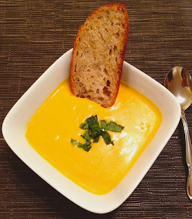

Home
Yeto's Superb Pumpkin and Goat Cheese Soup

Description
This is a hearty pumpkin soup inspired by the recipe from Legend of Zelda: Twilight Princess. It includes pumpkin, goat cheese, and fish (optional).
Ingredients
- 2 pounds Kabocha Squash (aka Japanese Pumpkin) or Sugar Pumpkin, cut into 8ths
- 1 White Onion, quartered
- 4 to 6 whole cloves Garlic
- Salt (to taste)
- Pepper (to taste)
- 4 ½ cups Fish Stock (alternative: chicken or vegetable stock)
- 4 ounces Goat Cheese (chevre) (or to taste)
- 1/2 cup Heavy Cream (or to taste)
- 4 leaves Fresh Basil, chiffonade (sliced into strips)
- ¼ cup Olive Oil (divided)
- 4 Arctic Char or Sockeye Salmon Fillets (optional, or fish of your choice)
- Chopped chives and/or toasted pumpkin seeds (for garnish)
Steps
- Toss the pumpkin, onion, and garlic with 2 tablespoons of olive oil to coat evenly. Season the veggies liberally with salt and pepper.
- Spread the veggies on a baking sheet in a single layer. Roast in the oven at 400°F (200°C) for 25-30 minutes, or until they are soft and have nice browned edges. Move the veggies around about halfway through to ensure even browning.
- Once the veggies have roasted and caramelized, you should be able to easily peel off the tough pumpkin skin at this point.
- Carefully transfer the vegetables into a large soup pot over medium heat.
- Pour in 3/4 of your stock (vegetable or chicken), and bring to a simmer. Let the mixture cook for up to 45 minutes, or until the vegetables are fully cooked and tender./li>
- Once the vegetables are tender, remove the pot from the heat, then transfer the soup in batches (no more than 2/3 full at a time) to a blender. Start on low speed to prevent splashing, gradually increasing the speed until the soup is smooth and creamy.
- After blending, return the soup back to the pot. Over medium heat, gradually stir in small amounts of the goat cheese and cream to taste. Continue to stir until the cheese is fully melted and the soup reaches a creamy, smooth consistency. Adjust the thickness by adding the remaining stock, if necessary, or add more cream if you'd like it richer.
- Season with basil, salt, and pepper to taste.
- To prepare the fish, heat a pan over medium-high heat and add a small amount of oil (such as olive oil). Season the fish fillet with salt and pepper on both sides. Place the fish in the hot pan and cook for about 2-3 minutes per side, or until the fish is browned and crisp outside, and flaky and tender inside.
- Once the fish is cooked, remove it from the pan and set it aside to rest for a minute. If you like, flake the fish into smaller pieces.
- Gently stir the flaked fish into the soup, or serve it on top of each bowl of soup.
- Garnish with additional herbs or toasted pumpkin seeds.
Click here for the original recipe
Home